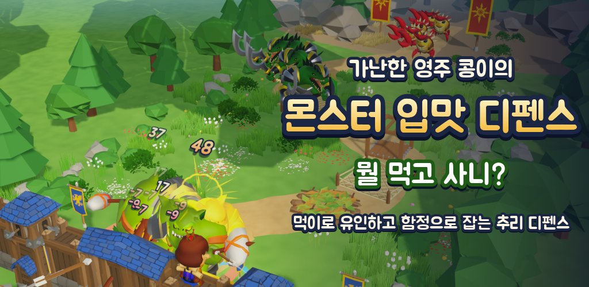
처음 하는 영주님을 위한 몬스터 입맛 디펜스 안내서예요. 위에서부터 차례로 읽으면 바로 시작할 수 있어요.
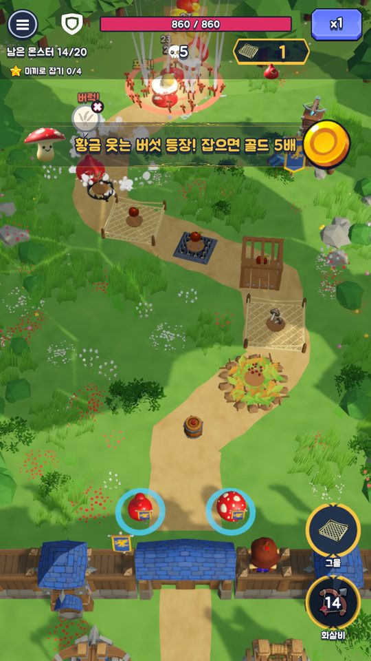
몬스터는 먹이 앞에서 세 가지 중 하나로 반응해요. 이 반응이 입맛을 알아내는 단서예요.
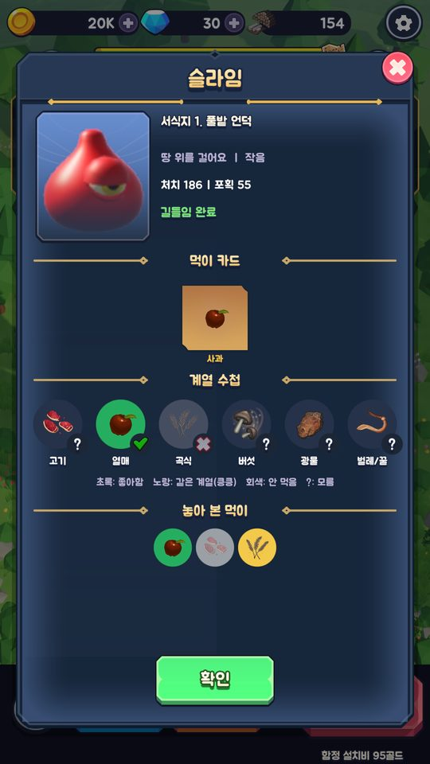
함정은 두 종류예요. 포획 함정은 몬스터를 산 채로 잡아 골드를, 처치 함정은 쓰러뜨려 재료를 줘요. 영지 본성 레벨이 오르면 더 좋은 함정이 열려요.
| 그물 포획 | 작은 몬스터를 한 번에 최대 3마리 포획. 먹이를 먹는 중이면 확률 3배 | 본성 Lv.1 |
| 곰덫 처치 | 한 마리를 묶고 큰 피해. 먹는 중인 몬스터에게 3배 | 본성 Lv.1 |
| 가시 바닥 처치 | 위를 지나는 모두에게 계속 피해. 모여서 먹을 때 강력 | 본성 Lv.1 |
| 못 판자 처치 | 밟으면 느려지고 약한 피해. 다른 함정과 함께 쓰기 좋아요 | 본성 Lv.2 |
| 우리 포획 | 중간 크기까지 한 마리 포획. 먹는 중이면 확률 3배 | 본성 Lv.2 |
| TNT 통 처치 | 3마리 이상 모이거나 누가 먹이를 먹으면 펑! 넓은 범위 큰 피해 | 본성 Lv.3 |
| 구덩이 포획 | 나뭇잎 덮개 아래 구덩이. 큰 몬스터까지 한 마리 포획(날아다니면 못 잡아요) | 본성 Lv.4 |
| 가시 롤러 처치 | 굴러가는 가시 통. 위를 지나는 모두에게 강한 피해 | 본성 Lv.5 |
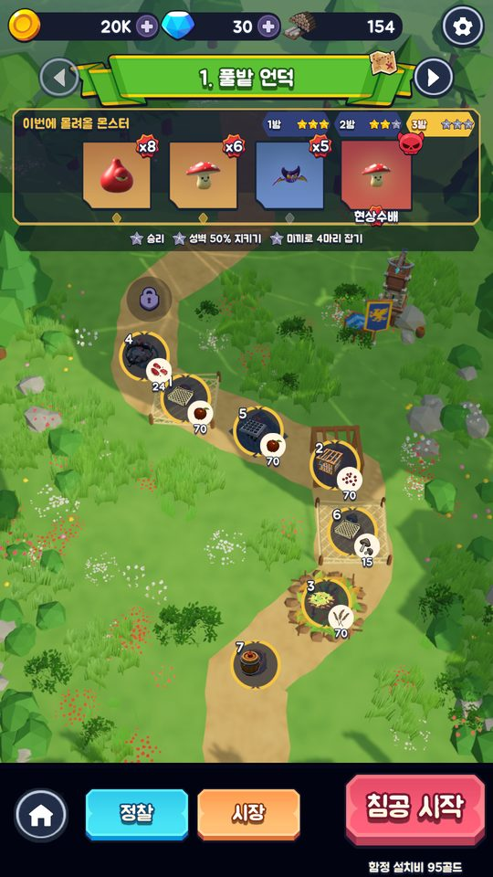
| 골드 | 포획한 몬스터를 팔거나 수확해서 얻어요. 먹이, 함정, 건물에 써요. |
| 보석 | 서식지 정복, 출석, 수수께끼로 얻어요. 공사 즉시 완료, 단서 보기, 골드 교환에 써요. |
| 재료 | 몬스터를 쓰러뜨리면 얻어요. 건물을 짓고 올릴 때 골드와 함께 써요. |
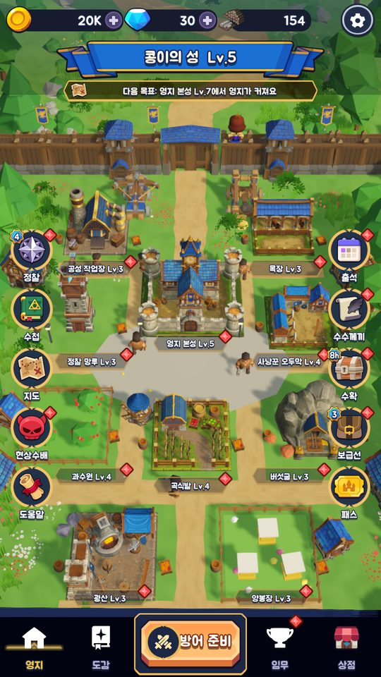
| 영지 본성 | 영지의 중심. 올리면 함정 칸/성곽 체력/정찰/길들이기 칸이 늘어나요 |
| 방어탑 | 성곽 위에서 다가오는 몬스터를 자동으로 쏴요 |
| 공성 작업장 | 발리스타(강한 한 발)와 투석기(모인 무리에 범위 피해)를 만들어요 |
| 사냥꾼 오두막 | 밝혀진 고기 먹이를 만들어요 |
| 과수원 | 밝혀진 열매 먹이를 길러요 |
| 곡식밭 | 밝혀진 곡식 먹이를 길러요 |
| 버섯굴 | 밝혀진 버섯 먹이를 길러요 |
| 광산 | 밝혀진 광물 먹이를 캐요 |
| 양봉장 | 밝혀진 벌레/꿀 먹이를 모아요 |
| 목장 | 포획한 몬스터를 돌봐요. 시간이 지나면 골드가 쌓이고, 먹이사슬 미끼로 쓸 수 있어요 |
| 정찰 망루 | 정찰병 장비(망원경/위장 망토)를 갖춰요 |
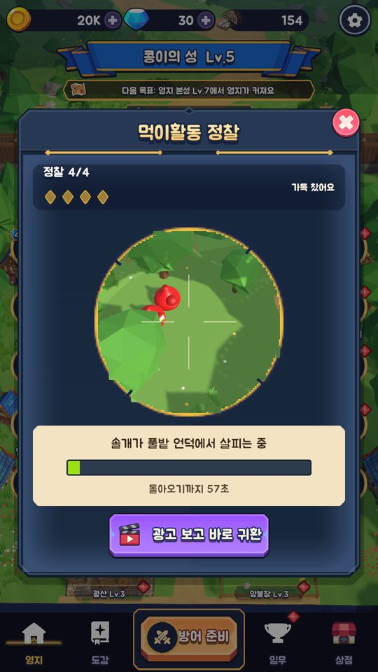
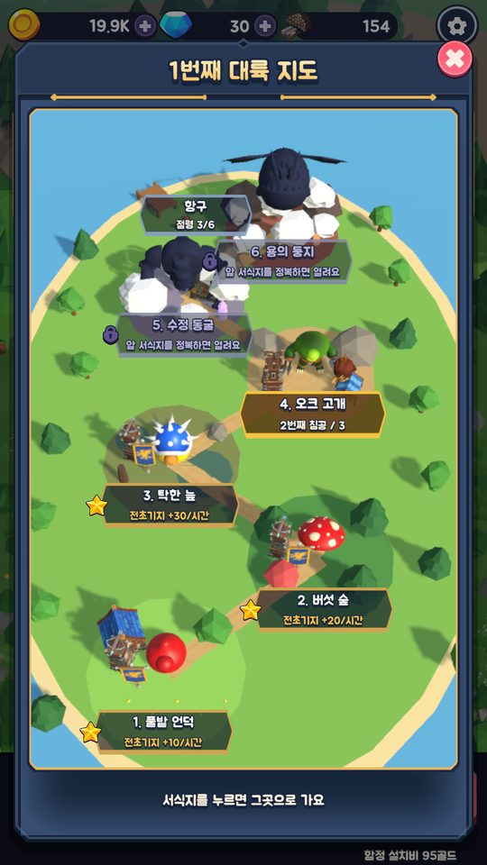
먹이 카드를 다 풀고 한 번 이상 잡은 몬스터는 수첩에서 길들일 수 있어요. 맡길 일:
| 수비병 | 성문 앞에서 몬스터를 직접 쳐요 |
| 정찰병 | 정찰 최대 횟수 +1 |
| 농장 일꾼 | 농장 생산량 +25% |
| 별 3개 | 밤마다 승리, 성벽 체력 50% 이상 지키기, 정답 미끼로 꾀어 잡기(몬스터 수의 20%) 세 가지 별이 있어요. 처음 얻은 별마다 보석 3, 대륙에서 별 9개를 모을 때마다 별 상자(골드 800, 보석 20). 깬 밤은 준비 화면 위 밤 단추로 골라 다시 할 수 있어요. |
| 틀린 미끼 | 미끼를 무시한 몬스터는 "버럭!" 하며 잠깐 빨라져요. 정답 미끼를 덥석 물면 보너스 골드가 들어와요. 아무거나 깔기보다 추리해서 까는 게 이득이에요. |
| 주간 현상수배 | 매주 한 서식지에 특별한 몬스터가 밤마다 한 번 나타나요. 먹는 먹이는 딱 하나! 영지 왼쪽 현상수배 버튼의 수배서에 반응이 쌓이니 좁혀 가세요. 미끼로 꾀어 산 채로 잡으면 골드 1500, 보석 40. |
| 대륙 규칙 | 2번째 대륙부터 계절마다 규칙이 달라요. 가을: 냄새 범위 좁음, 무리 유인 넓음, 황금 몬스터 2배. 겨울: 함정 대기 김, 몬스터 느림, 냄새 범위 넓음. 꽃: 몬스터 빠름, 오래 먹음, 잘 잡힘. |
| 수비병 | 수비병으로 길들인 몬스터는 성문 앞에서 다가오는 몬스터에게 달려가 치고 잠깐 묶어요. 미끼를 먹으러 가는 몬스터는 함정에 맡겨요. |
| 오늘 밤의 사건 | 밤의 약 50%에 사건이 생겨요(방어 준비 화면에 미리 보여요): 보름달(빠르지만 골드 1.5배), 풍년(미끼가 오래감), 황금비(황금 몬스터 4배), 천둥번개(콩이 기술 대기 절반), 굶주린 밤(냄새·유인 범위 넓음), 짙은 안개(튼튼하지만 골드 1.3배). |
| 보물 상자 | 잡은 몬스터가 가끔(황금 몬스터는 항상) 보물 상자를 떨어뜨려요. 5초 안에 눌러야 열려요: 골드, 가끔 먹이 묶음이나 보석. |
| 콩이 기술 강화 | 영지 왼쪽 콩이 기술에서 골드와 재료로 그물(대기 짧게, 포획 확률 높게)과 화살비(피해·범위 크게, 대기 짧게)를 Lv.5까지 올려요. 새 대륙에 가도 그대로예요. |
| 보스 포효 | 보스는 걸어오며 9초마다 포효해요. 근처 함정이 잠깐 멈추고 졸개가 나타나니 기술을 아껴 두세요. |
| 스타터 팩 | 처음 한 번만 살 수 있는 가장 이득인 꾸러미(보석·골드·모든 먹이). |
| 광고 제거 | 전면 광고가 사라지고, 광고 보상은 광고 없이 바로 받아요. |
| 시즌 패스 | 30일 동안 모든 골드 +20%, 매일 보석 30. 영지 오른쪽 패스 버튼에서 남은 기간을 보고 매일 보석을 받아요. 다시 사면 기간이 이어져요(자동 결제 아님). |
| 보석 | 먹이 단서 보기·건설 바로 끝내기·골드로 바꾸기에 써요. |
| 먹이 상자 | 고른 계열의 먹이를 한꺼번에 받아요. |
정답 먹이와 뽑기(확률형) 상품은 팔지 않아요.
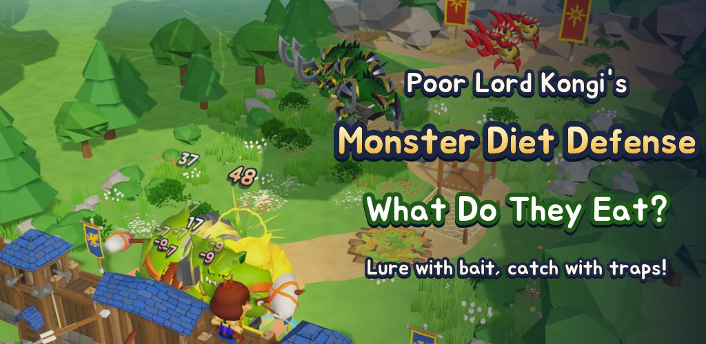
A beginner's guide to Monster Diet Defense. Read from the top and you'll be ready to defend your estate.
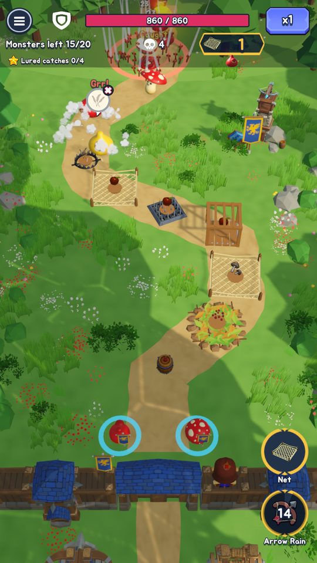
Monsters react to bait in one of three ways. These reactions are your clues.
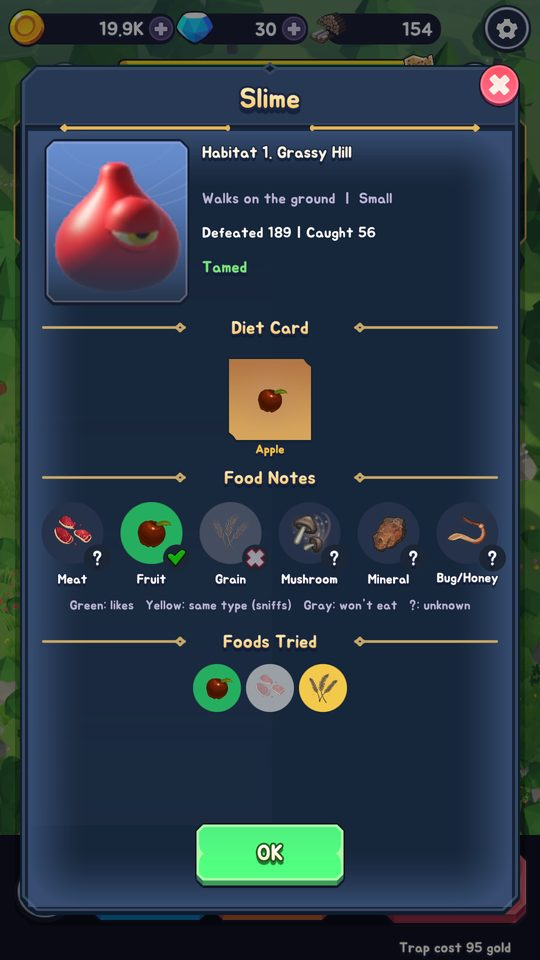
Capture traps catch monsters alive for gold; Defeat traps take them down for materials. Better traps unlock as your Keep levels up.
| Net Capture | Catches up to 3 small monsters at once. 3x chance while they eat | Keep Lv.1 |
| Bear Trap Defeat | Holds one monster and deals big damage. 3x on monsters that are eating | Keep Lv.1 |
| Spike Floor Defeat | Keeps hurting everything on top. Strong when they gather to eat | Keep Lv.1 |
| Nail Board Defeat | Slows and deals light damage. Great with other traps | Keep Lv.2 |
| Cage Capture | Catches one monster up to medium size. 3x chance while it eats | Keep Lv.2 |
| TNT Barrel Defeat | Boom when 3+ gather or someone eats! Big damage in a wide area | Keep Lv.3 |
| Pitfall Capture | A pit under a leaf cover. Catches one monster, even large ones (not flyers) | Keep Lv.4 |
| Spike Roller Defeat | A rolling spiked drum. Heavy damage to everything that passes | Keep Lv.5 |
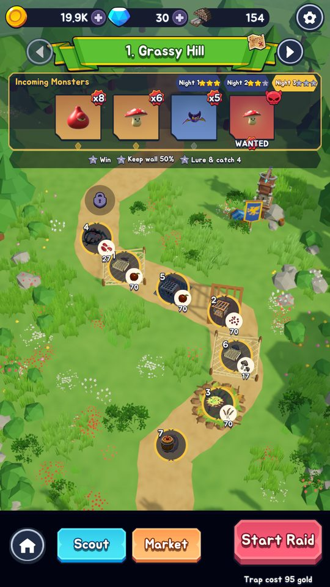
| Gold | Earned by selling caught monsters and from harvests. Spent on food, traps and buildings. |
| Gems | Earned from conquests, check-ins and riddles. Spent on instant builds, hints and gold. |
| Materials | Dropped by defeated monsters. Needed with gold to build and upgrade. |
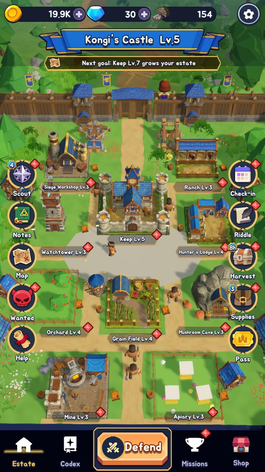
| Keep | Heart of the estate. Adds trap slots, wall HP, scouts and taming slots |
| Defense Tower | Shoots approaching monsters from the wall |
| Siege Workshop | Builds a ballista (one strong shot) and a catapult (area damage) |
| Hunter's Lodge | Produces discovered meat foods |
| Orchard | Grows discovered fruit foods |
| Grain Field | Grows discovered grain foods |
| Mushroom Cave | Grows discovered mushroom foods |
| Mine | Digs up discovered mineral foods |
| Apiary | Collects discovered bug/honey foods |
| Ranch | Looks after caught monsters. Earns gold over time and provides food-chain bait |
| Watchtower | Equips your scout (spyglass, camouflage cloak) |
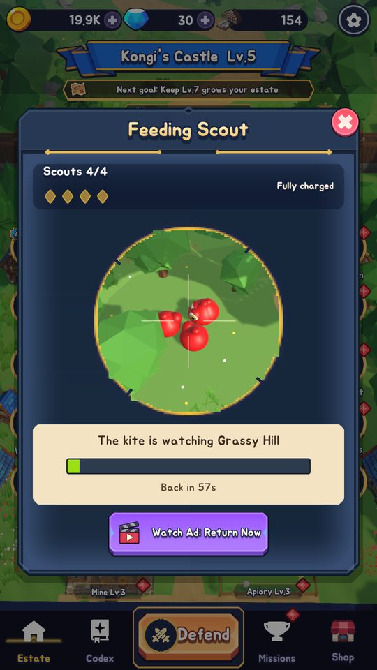
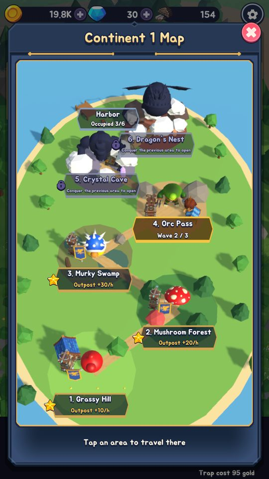
Monsters whose diet card is fully decoded and that you have caught at least once can be tamed from the Codex. Roles:
| Guard | Fights monsters at the gate |
| Scout | Max scouting charges +1 |
| Farmhand | Farm output +25% |
| Three stars | Each night has three stars: win, keep the wall at 50%+, and lure & catch monsters with the right bait (20% of the horde). Each new star gives 3 gems, and every 9 stars on a continent open a star chest (800 gold, 20 gems). Replay cleared nights with the night buttons on the Defend screen. |
| Wrong bait | Monsters that ignore your bait go "Grr!" and speed up for a moment. A right bait (Chomp) pays bonus gold. Deduce before you place! |
| Weekly Wanted | Each week a special monster appears once a night in one area. It eats only ONE food! Its reactions pile up on the poster (the Wanted button on the left of the estate). Lure it and catch it alive for 1500 gold and 40 gems. |
| Land rules | From the 2nd continent, each season has its own rules. Autumn: short smell, wide herd lure, 2x golden monsters. Winter: slow traps, slow monsters, long smell. Blossom: fast monsters, long meals, easier catches. |
| Guards | Monsters tamed as guards rush out from the gate to hit and briefly hold incoming monsters. They leave monsters heading for bait to your traps. |
| Night events | About 50% of nights have an event, shown on the Defend screen: Full Moon (faster, 1.5x gold), Bumper Harvest (bait lasts longer), Golden Rain (4x golden monsters), Thunderstorm (skills recharge 2x faster), Hungry Night (wider smell and lure), Thick Fog (tougher, 1.3x gold). |
| Treasure chests | Caught monsters sometimes drop a chest (golden ones always do). Tap it within 5s to open: gold, sometimes food or gems. |
| Kongi skill upgrades | Use gold and materials in Skills on the left of the estate to upgrade the Net (shorter cooldown, higher catch rate) and Arrow Rain (more damage and area, shorter cooldown) up to Lv.5. Levels carry over to new continents. |
| Boss roar | Bosses roar every 9s as they walk. Nearby traps pause and minions appear, so save your skills. |
| Starter Pack | The best-value bundle, one time only (gems, gold and every food). |
| Remove Ads | No more interstitial ads; get ad rewards instantly without watching. |
| Season Pass | For 30 days: +20% on all gold and 30 gems every day. Check days left and claim daily gems from the Pass button on the right of the estate. Buying again extends it (not a subscription). |
| Gems | Use them to reveal diet hints, finish construction instantly, or trade for gold. |
| Food Crates | Get lots of bait from the food family you choose. |
Answers and random (gacha) items are never sold.
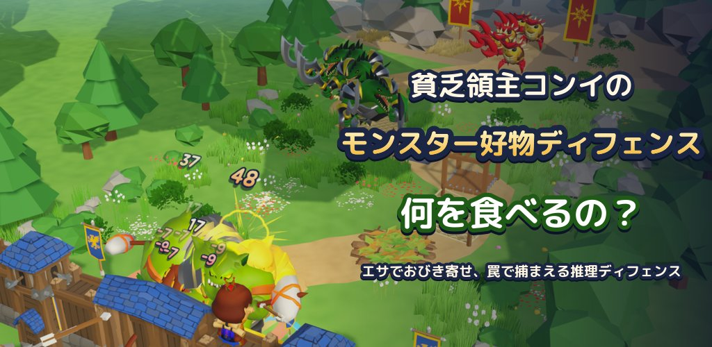
はじめての領主さま向けのモンスター好物ディフェンスの案内です。上から順に読めばすぐに始められます。
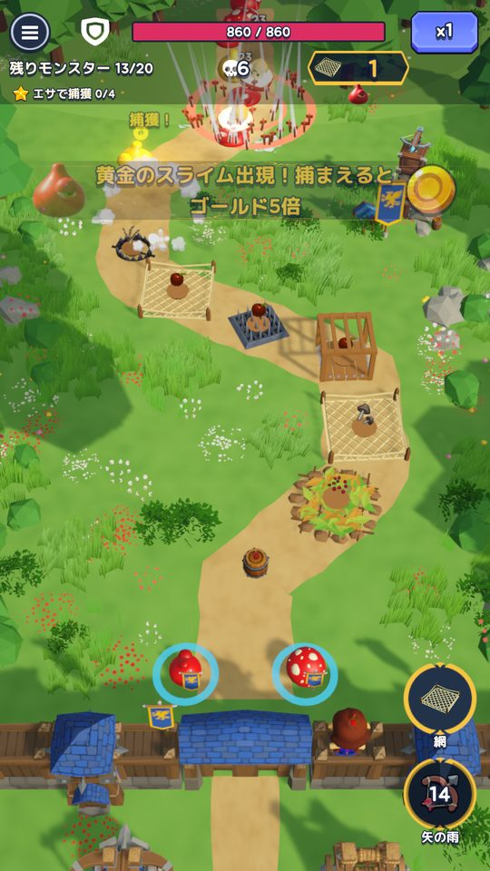
モンスターはエサの前で3つの反応のどれかを見せます。これが好物を見つける手がかりです。
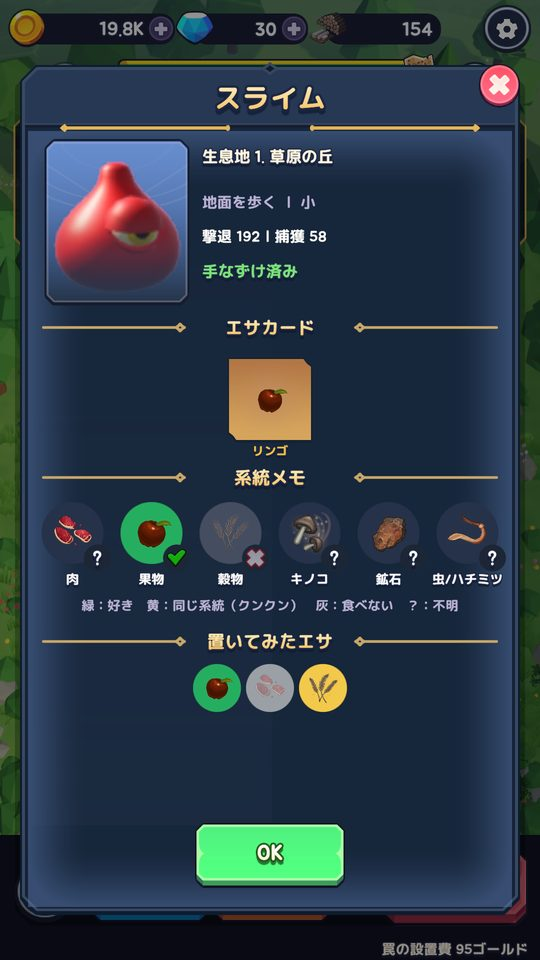
捕獲の罠はモンスターを生け捕りにしてゴールドに、撃退の罠は倒して素材にします。本城のレベルが上がると強い罠が開放されます。
| 網 捕獲 | 小さいモンスターを一度に最大3匹捕獲。食事中なら確率3倍 | 本城 Lv.1 |
| トラバサミ 撃退 | 1匹を捕まえて大ダメージ。食事中のモンスターには3倍 | 本城 Lv.1 |
| トゲの床 撃退 | 上を通る全員に継続ダメージ。集まって食べる時に強力 | 本城 Lv.1 |
| クギ板 撃退 | 踏むと遅くなり弱いダメージ。他の罠と組み合わせよう | 本城 Lv.2 |
| オリ 捕獲 | 中サイズまで1匹捕獲。食事中なら確率3倍 | 本城 Lv.2 |
| TNT樽 撃退 | 3匹以上集まるか、誰かがエサを食べるとドカン！広い範囲に大ダメージ | 本城 Lv.3 |
| 落とし穴 捕獲 | 葉っぱで隠した穴。大きいモンスターまで1匹捕獲（飛ぶ相手は無理） | 本城 Lv.4 |
| トゲローラー 撃退 | 転がるトゲの樽。上を通る全員に強いダメージ | 本城 Lv.5 |
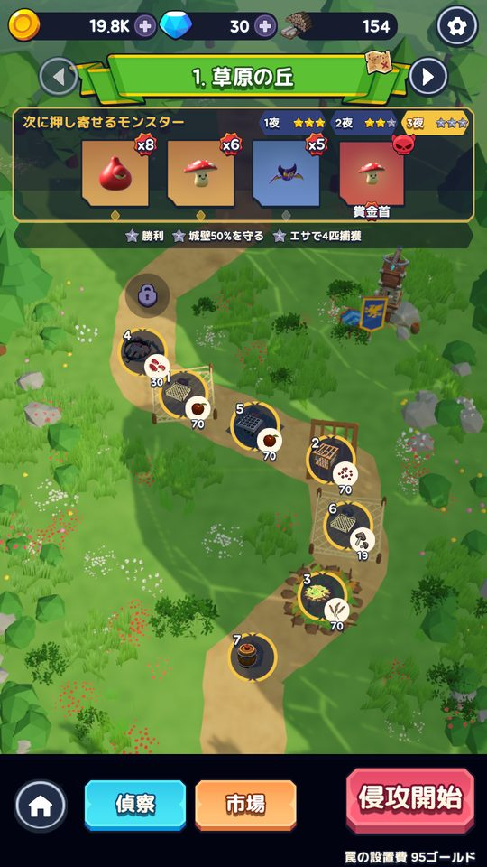
| ゴールド | 捕まえたモンスターを売ったり収穫したりで手に入る。エサ・罠・建物に使う。 |
| ジェム | 制覇・出席・なぞなぞで手に入る。建築の即時完了、ヒント、ゴールド交換に使う。 |
| 素材 | モンスターを倒すと手に入る。建物の建築・レベルアップにゴールドと一緒に使う。 |
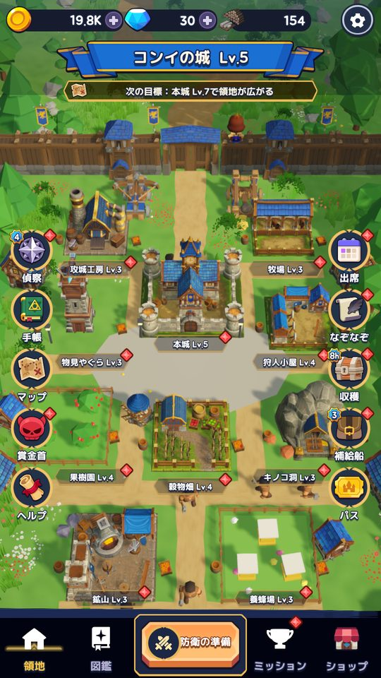
| 本城 | 領地の中心。上げると罠マス・城壁・偵察・手なずけ枠が増えます |
| 防衛塔 | 城壁の上から近づくモンスターを自動で撃ちます |
| 攻城工房 | バリスタ（強い一撃）と投石機（群れに範囲ダメージ）を作ります |
| 狩人小屋 | 判明した肉のエサを作ります |
| 果樹園 | 判明した果物のエサを育てます |
| 穀物畑 | 判明した穀物のエサを育てます |
| キノコ洞 | 判明したキノコのエサを育てます |
| 鉱山 | 判明した鉱石のエサを掘ります |
| 養蜂場 | 判明した虫/ハチミツのエサを集めます |
| 牧場 | 捕獲したモンスターの世話をします。時間とともにゴールドがたまり、食物連鎖のエサにもなります |
| 物見やぐら | 偵察兵の装備（望遠鏡・迷彩マント）をそろえます |
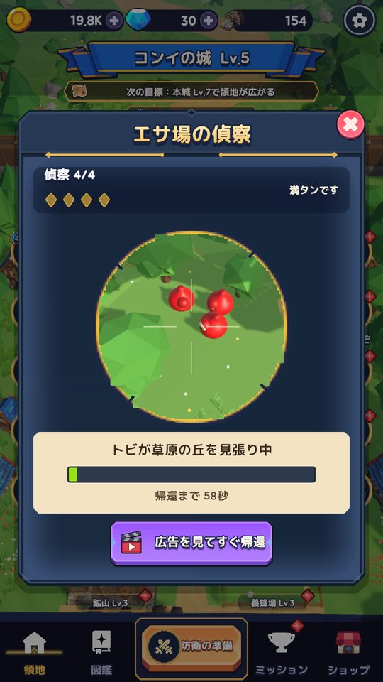
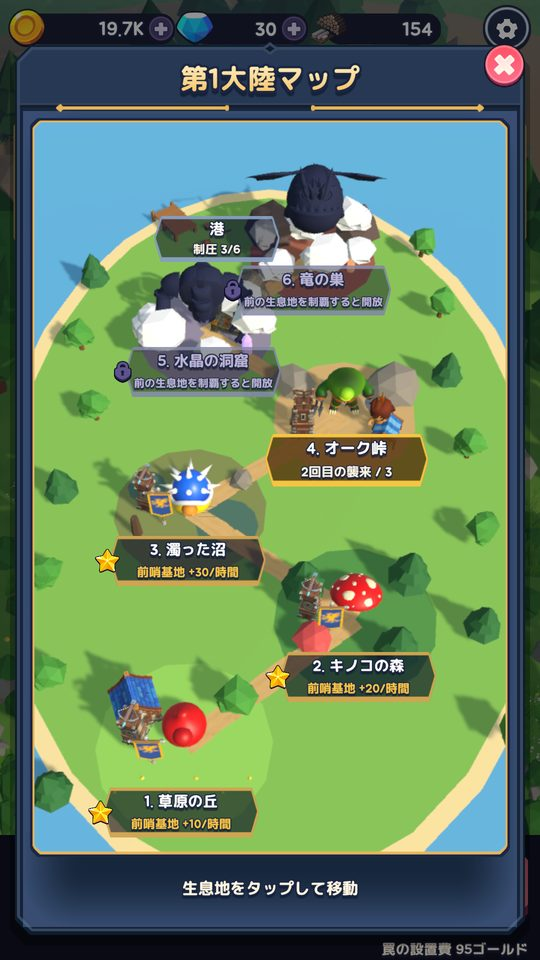
エサカードを全部解読し、1回以上捕まえたモンスターは手帳から手なずけられます。任せる仕事：
| 守備兵 | 城門の前でモンスターを直接たたく |
| 偵察兵 | 偵察の最大回数 +1 |
| 農場係 | 農場の生産量 +25% |
| 星3つ | 毎晩勝利、城壁50%以上を守る、正解のエサでおびき寄せて捕獲（モンスター数の20%）の3つの星があります。初めての星ごとに宝石3、大陸で星を9個集めるたびに星の宝箱（ゴールド800、宝石20）。クリアした夜は準備画面の夜ボタンで選んで再挑戦できます。 |
| 間違ったエサ | エサを無視したモンスターは「ムカッ！」と少し速くなります。正解のエサに食いつくとボーナスゴールド。推理してから置きましょう。 |
| 今週の賞金首 | 毎週ひとつの生息地に特別なモンスターが毎晩1回現れます。食べるエサはたった1種類！領地左の賞金首ボタンの手配書に反応がたまるので絞り込みましょう。エサでおびき寄せて生け捕りにするとゴールド1500、宝石40。 |
| 大陸ルール | 2番目の大陸から季節ごとにルールが変わります。秋：嗅ぐ範囲が狭い、群れ寄せが広い、黄金モンスター2倍。冬：罠の待ち時間が長い、モンスターが遅い、嗅ぐ範囲が広い。花：モンスターが速い、長く食べる、捕まえやすい。 |
| 守備兵 | 守備兵として手なずけたモンスターは城門前から駆け出して敵を叩き、少し足止めします。エサに向かうモンスターは罠に任せます。 |
| 今夜の出来事 | 約50%の夜に出来事が起こります（防衛の準備画面に表示）：満月（速いがゴールド1.5倍）、豊作（エサが長持ち）、黄金の雨（黄金モンスター4倍）、雷雨（コンイの技の待ち時間半分）、飢えた夜（匂い・おびき寄せ範囲が広い）、濃い霧（頑丈だがゴールド1.3倍）。 |
| 宝箱 | 捕まえたモンスターがときどき宝箱を落とします（黄金モンスターは必ず）。5秒以内にタップで開封：ゴールド、ときどきエサや宝石。 |
| コンイの技の強化 | 領地左のコンイの技でゴールドと資材を使い、網（待ち時間短縮・捕獲率アップ）と矢の雨（ダメージ・範囲アップ、待ち時間短縮）をLv.5まで強化。新大陸でもそのまま。 |
| ボスの咆哮 | ボスは歩きながら9秒ごとに咆哮します。近くの罠が止まり子分が現れるので、技を温存しよう。 |
| スターターパック | 1回だけ買える一番お得なセット（ジェム・ゴールド・全エサ）。 |
| 広告削除 | インタースティシャル広告が消え、広告報酬は広告なしですぐ受け取れます。 |
| シーズンパス | 30日間すべてのゴールド+20%、毎日ジェム30。領地右のパスボタンで残り日数を確認し、毎日のジェムを受け取ります。もう一度買うと期間が延びます（自動更新ではありません）。 |
| ジェム | エサのヒント・建設の即完了・ゴールドとの交換に使います。 |
| エサ箱 | 選んだ系統のエサをまとめて受け取れます。 |
答えのエサとガチャ（確率型）商品は販売していません。